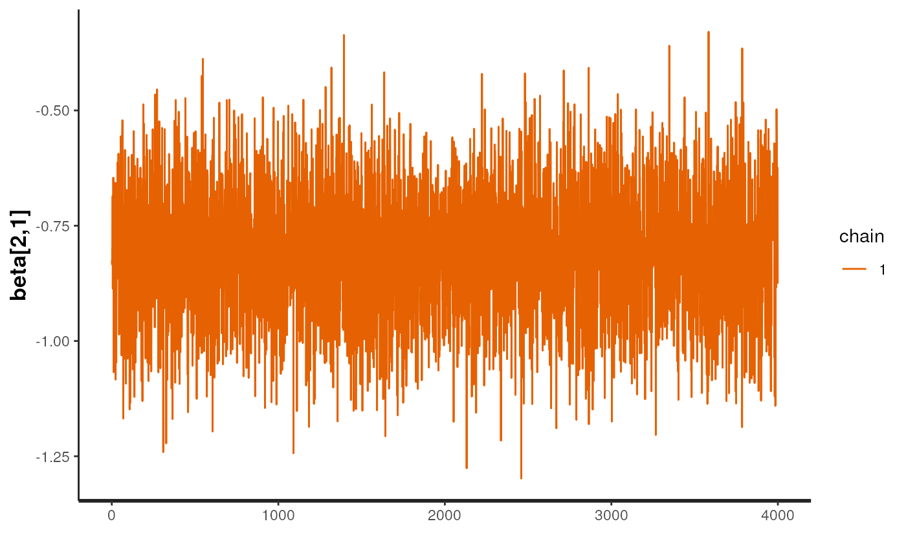
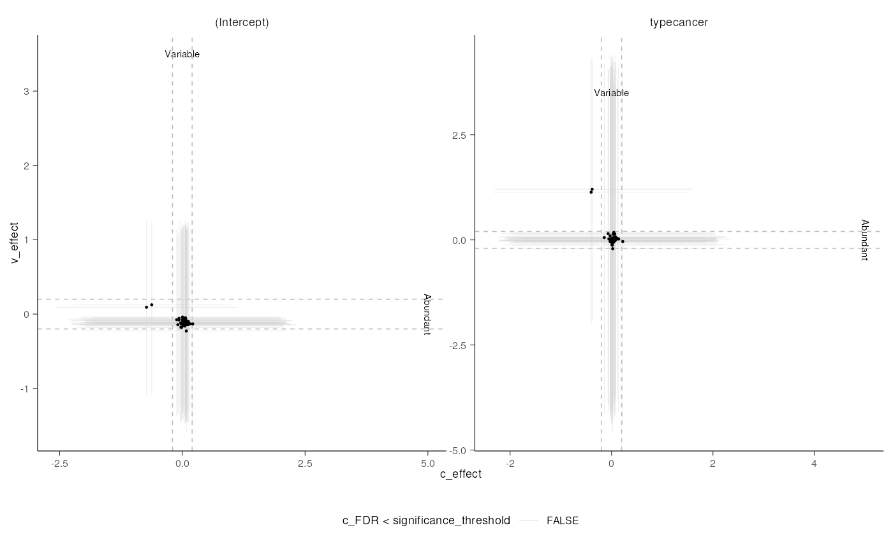

Overview of the sccomp package
Stefano Mangiola
2022-12-02
Source:vignettes/introduction.Rmd
introduction.Rmd

Cell omics such as single-cell genomics, proteomics and microbiomics allow the characterisation of tissue and microbial community composition, which can be compared between conditions to identify biological drivers. This strategy has been critical to unveiling markers of disease progression such as cancer and pathogen infection. For cell omic data, no method for differential variability analysis exists, and methods for differential composition analysis only take a few fundamental data properties into account. Here we introduce sccomp, a generalised method for differential composition and variability analyses able to jointly model data count distribution, compositionality, group-specific variability and proportion mean-variability association, with awareness against outliers. Sccomp is an extensive analysis framework that allows realistic data simulation and cross-study knowledge transfer. Here, we demonstrate that mean-variability association is ubiquitous across technologies showing the inadequacy of the very popular Dirichlet-multinomial modelling and provide mandatory principles for differential variability analysis. We show that sccomp accurately fits experimental data, with a 50% incremental improvement over state-of-the-art algorithms. Using sccomp, we identified novel differential constraints and composition in the microenvironment of primary breast cancer.
Installation
(simple) Suggested for single-cell and CyTOF analyses
Bioconductor
if (!requireNamespace("BiocManager")) {
install.packages("BiocManager")
}
BiocManager::install("sccomp")Github
devtools::install_github("stemangiola/sccomp")(more complex and efficient, until further optimisation of the default installation) Suggested for microbiomics
Github
install.packages("cmdstanr", repos = c("https://mc-stan.org/r-packages/", getOption("repos")))
check_cmdstan_toolchain()
install_cmdstan(cores = 2)
# Then, check the correct cmdstanr installation here
# https://mc-stan.org/cmdstanr/articles/cmdstanr.html
# Then install sccomp with the cmdstanr branch
devtools::install_github("stemangiola/sccomp@cmdstanr")Analysis
sccomp can model changes in composition and variability.
Normally the furmula for variability is either ~1, which
assumes that the cell-group variability is independent on any covariate,
or ~ factor_of_interest, which assumes that the model is
dependent on the factor of interest only. However, more complex models
for variability are possible, is the sample size is large. In any case
the model for variability must be a subset of the model for
composition.
From Seurat Object
res =
seurat_obj |>
sccomp_glm(
formula_composition = ~ type,
formula_variability = ~ 1,
sample,
cell_group
)From SingleCellExperiment Object
res =
sce_obj |>
sccomp_glm(
formula_composition = ~ type,
formula_variability = ~ 1,
sample,
cell_group
)From data.frame
res =
seurat_obj[[]] |>
sccomp_glm(
formula_composition = ~ type,
formula_variability = ~ 1,
sample,
cell_group
)From counts
res =
counts_obj |>
sccomp_glm(
formula_composition = ~ type,
formula_variability = ~ 1,
.sample = sample,
.cell_group = cell_group,
.count = count
)## sccomp says: outlier identification first pass - step 1/3 [ETA: ~20s]## sccomp says: outlier identification second pass - step 2/3 [ETA: ~60s]## sccomp says: outlier-free model fitting - step 3/3 [ETA: ~20s]## sccomp says: the composition design matrix has columns: (Intercept), typecancer## sccomp says: the variability design matrix has columns: (Intercept)
res## # A tibble: 72 × 14
## cell_gr…¹ param…² covar…³ c_lower c_eff…⁴ c_upper c_pH0 c_FDR v_lower v_eff…⁵
## <chr> <chr> <chr> <dbl> <dbl> <dbl> <dbl> <dbl> <dbl> <dbl>
## 1 B1 (Inter… NA -2.10 -0.0489 1.96 0.560 0.525 -1.31 -0.0219
## 2 B1 typeca… type -2.15 -0.0562 2.10 0.558 0.530 NA NA
## 3 B2 (Inter… NA -1.86 0.146 2.12 0.521 0.409 -1.25 0.158
## 4 B2 typeca… type -2.02 0.0299 2.13 0.564 0.537 NA NA
## 5 B3 (Inter… NA -2.10 0.0173 2.18 0.567 0.534 -1.30 0.0563
## 6 B3 typeca… type -2.01 -0.0530 1.92 0.556 0.527 NA NA
## 7 BM (Inter… NA -1.86 0.0670 2.04 0.552 0.507 -1.17 0.195
## 8 BM typeca… type -2.09 0.121 2.29 0.531 0.483 NA NA
## 9 CD4 1 (Inter… NA -2.07 0.0507 2.13 0.556 0.513 -1.11 0.120
## 10 CD4 1 typeca… type -2.12 0.0234 2.19 0.563 0.533 NA NA
## # … with 62 more rows, 4 more variables: v_upper <dbl>, v_pH0 <dbl>,
## # v_FDR <dbl>, count_data <list>, and abbreviated variable names ¹cell_group,
## # ²parameter, ³covariate, ⁴c_effect, ⁵v_effectOf the output table, the estimate columns startwith the prefix
c_ indicate composition.
Suggested settings for single-cell RNA sequencing
We reccommend to set
bimodal_mean_variability_association = TRUE. The
bimodality of the mean-variability association can be confirmed from the
plots$credible_intervals_2D (see below).
Suggested settings for CyTOF and microbiome data
We reccommend to set
bimodal_mean_variability_association = FALSE
(Default).
Visualise data + inference
plots = plot_summary(res) ## Joining, by = c("sample", "cell_group")
## Joining, by = c("cell_group", "type")Plot of group proportion, faceted by groups. The blue boxplots
represent the posterior predictive check. If the model is likely be
descriptively adequate to the data, the blue boxplot should roughly
overlay with the black boxplot, which represent the observed data. The
outliers are coloured in red. A boxplot will be returned for every
(discrete) covariates present in formula_composition. The
color coding represent the significant associations for composition
and/or variability.
plots$boxplotPlot of estimates of differential composition (c_) on the x axis, and differential variability (v_) on the y axis. The error bars represent 95% credible intervals. The dashed lines represent the minimal effect that the hypothesis test is based on. An effect is labelled as significant if bigger than the minimal effect according to the 95% credible interval. Facets represent the covariates in the model.
plots$credible_intervals_1D
Visualisation of the MCMC chains from the posterior distribution
It is possible to directly evaluate the posterior distribution. In this example we plot the Monte Carlo chain for the slope parameter of the first cell type. We can see that has converged and is negative with probability 1.

Differential variability
We can model the cell-group variability also dependent on type, and so test differences in variability
res =
counts_obj |>
sccomp_glm(
formula_composition = ~ type,
formula_variability = ~ type,
.sample = sample,
.cell_group = cell_group,
.count = count
)## sccomp says: outlier identification first pass - step 1/3 [ETA: ~20s]## sccomp says: outlier identification second pass - step 2/3 [ETA: ~60s]## sccomp says: outlier-free model fitting - step 3/3 [ETA: ~20s]## sccomp says: the composition design matrix has columns: (Intercept), typecancer## sccomp says: the variability design matrix has columns: (Intercept), typecancer
res## # A tibble: 72 × 14
## cell_…¹ param…² covar…³ c_lower c_effect c_upper c_pH0 c_FDR v_lower v_effect
## <chr> <chr> <chr> <dbl> <dbl> <dbl> <dbl> <dbl> <dbl> <dbl>
## 1 B1 (Inter… NA -2.00 0.104 2.16 0.534 0.464 -1.22 -0.0232
## 2 B1 typeca… type -2.29 -0.0913 2.18 0.538 0.490 -4.07 -0.0338
## 3 B2 (Inter… NA -1.91 0.0248 2.07 0.568 0.520 -1.18 0.00855
## 4 B2 typeca… type -2.02 0.0717 2.06 0.546 0.506 -4.21 -0.152
## 5 B3 (Inter… NA -2.01 0.00866 2.11 0.578 0.534 -1.24 0.00614
## 6 B3 typeca… type -1.96 0.0670 2.00 0.560 0.535 -3.69 0.105
## 7 BM (Inter… NA -1.93 0.0801 2.09 0.546 0.477 -1.38 -0.00699
## 8 BM typeca… type -2.07 -0.0386 1.88 0.560 0.536 -4.67 0.0254
## 9 CD4 1 (Inter… NA -1.97 0.0598 2.03 0.548 0.491 -1.33 -0.00953
## 10 CD4 1 typeca… type -2.04 0.125 2.27 0.528 0.472 -4.11 -0.0361
## # … with 62 more rows, 4 more variables: v_upper <dbl>, v_pH0 <dbl>,
## # v_FDR <dbl>, count_data <list>, and abbreviated variable names ¹cell_group,
## # ²parameter, ³covariatePlot 1D significance plot
plots = plot_summary(res)## Joining, by = c("sample", "cell_group")
## Joining, by = c("cell_group", "type")
plots$credible_intervals_1D
Plot 2D significance plot. Data points are cell groups. Error bars are the 95% credible interval. The dashed lines represent the default threshold fold change for which the probabilities (c_pH0, v_pH0) are calculated. pH0 of 0 represent the rejection of the null hypothesis, that no effect is observed.
This plot is provided only if differential variability has been
tested. The differential variability estimates are reliable only if the
linear association between mean and variability for
(intercept) (left-hand side facet) is satisfied. A
scatterplot (beside the Intercept) is provided for each of the
categories of interest. The for each category of interest, the
composition and variability effects should be generally
uncorrelated.
plots$credible_intervals_2D
## R version 4.2.2 (2022-10-31)
## Platform: x86_64-pc-linux-gnu (64-bit)
## Running under: Ubuntu 22.04.1 LTS
##
## Matrix products: default
## BLAS: /usr/lib/x86_64-linux-gnu/openblas-pthread/libblas.so.3
## LAPACK: /usr/lib/x86_64-linux-gnu/openblas-pthread/libopenblasp-r0.3.20.so
##
## locale:
## [1] LC_CTYPE=en_US.UTF-8 LC_NUMERIC=C
## [3] LC_TIME=en_US.UTF-8 LC_COLLATE=en_US.UTF-8
## [5] LC_MONETARY=en_US.UTF-8 LC_MESSAGES=en_US.UTF-8
## [7] LC_PAPER=en_US.UTF-8 LC_NAME=C
## [9] LC_ADDRESS=C LC_TELEPHONE=C
## [11] LC_MEASUREMENT=en_US.UTF-8 LC_IDENTIFICATION=C
##
## attached base packages:
## [1] stats graphics grDevices utils datasets methods base
##
## other attached packages:
## [1] rstan_2.21.7 StanHeaders_2.21.0-7 tidyr_1.2.1
## [4] forcats_0.5.2 ggplot2_3.4.0 sccomp_1.3.4
## [7] dplyr_1.0.10 BiocStyle_2.26.0
##
## loaded via a namespace (and not attached):
## [1] bitops_1.0-7 matrixStats_0.63.0
## [3] fs_1.5.2 RColorBrewer_1.1-3
## [5] rprojroot_2.0.3 GenomeInfoDb_1.34.3
## [7] tools_4.2.2 bslib_0.4.1
## [9] utf8_1.2.2 R6_2.5.1
## [11] BiocGenerics_0.44.0 colorspace_2.0-3
## [13] withr_2.5.0 sp_1.5-1
## [15] gridExtra_2.3 prettyunits_1.1.1
## [17] processx_3.8.0 tidyselect_1.2.0
## [19] compiler_4.2.2 progressr_0.11.0
## [21] textshaping_0.3.6 cli_3.4.1
## [23] Biobase_2.58.0 desc_1.4.2
## [25] DelayedArray_0.24.0 labeling_0.4.2
## [27] bookdown_0.30 sass_0.4.4
## [29] scales_1.2.1 readr_2.1.3
## [31] callr_3.7.3 pkgdown_2.0.6
## [33] systemfonts_1.0.4 stringr_1.4.1
## [35] digest_0.6.30 rmarkdown_2.18
## [37] XVector_0.38.0 pkgconfig_2.0.3
## [39] htmltools_0.5.3 parallelly_1.32.1
## [41] MatrixGenerics_1.10.0 highr_0.9
## [43] fastmap_1.1.0 rlang_1.0.6
## [45] farver_2.1.1 jquerylib_0.1.4
## [47] generics_0.1.3 jsonlite_1.8.3
## [49] inline_0.3.19 RCurl_1.98-1.9
## [51] magrittr_2.0.3 GenomeInfoDbData_1.2.9
## [53] loo_2.5.1 patchwork_1.1.2
## [55] Matrix_1.5-3 Rcpp_1.0.9
## [57] munsell_0.5.0 S4Vectors_0.36.0
## [59] fansi_1.0.3 lifecycle_1.0.3
## [61] stringi_1.7.8 yaml_2.3.6
## [63] SummarizedExperiment_1.28.0 zlibbioc_1.44.0
## [65] pkgbuild_1.4.0 grid_4.2.2
## [67] parallel_4.2.2 listenv_0.8.0
## [69] ggrepel_0.9.2 crayon_1.5.2
## [71] lattice_0.20-45 hms_1.1.2
## [73] ps_1.7.2 knitr_1.41
## [75] pillar_1.8.1 GenomicRanges_1.50.1
## [77] boot_1.3-28.1 future.apply_1.10.0
## [79] codetools_0.2-18 stats4_4.2.2
## [81] rstantools_2.2.0 glue_1.6.2
## [83] evaluate_0.18 SeuratObject_4.1.3
## [85] BiocManager_1.30.19 RcppParallel_5.1.5
## [87] vctrs_0.5.1 tzdb_0.3.0
## [89] gtable_0.3.1 purrr_0.3.5
## [91] future_1.29.0 cachem_1.0.6
## [93] xfun_0.35 ragg_1.2.4
## [95] SingleCellExperiment_1.20.0 tibble_3.1.8
## [97] memoise_2.0.1 IRanges_2.32.0
## [99] globals_0.16.2 ellipsis_0.3.2